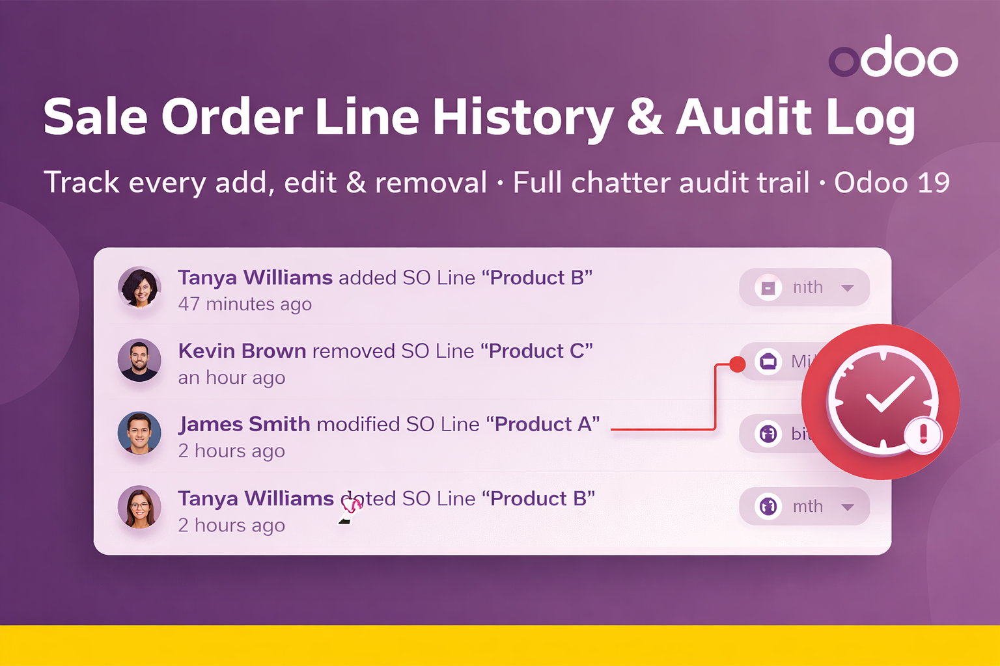

See It In Action
Chatter log showing an order line modification with before/after values.


Sale Order Line History & Audit Log automatically records every modification made to sale order lines and posts a detailed, human-readable note directly in the order chatter. Know what changed, when it changed — with zero extra clicks.
| Without This Module | With This Module |
|---|---|
| ❌ No record of who changed a product on an order | ✔ Full log of every product added or removed |
| ❌ Impossible to see if a price was modified after confirmation | ✔ Before/after price unit displayed in chatter |
| ❌ Discount changes go undetected | ✔ Discount percentage changes tracked precisely |
| ❌ Quantity edits are invisible in audit | ✔ Quantity and unit of measure changes logged |
| ❌ Tax modifications cause silent billing errors | ✔ Tax changes captured and logged automatically |
Every save that touches order lines triggers an internal note in the chatter — no configuration needed.
Clearly distinguishes between new lines (green) and deleted lines (red) with full product details.
For modified lines, shows exactly which field changed with the old value → new value for each attribute.
Prices are formatted with the order's currency symbol and decimal precision automatically.
Snapshots are only taken when order_line is actually part of the write — other saves are never touched.
Pure extension — no views, no fields, no security rules required. Installs and uninstalls cleanly.
Chatter log showing an order line modification with before/after values.
| Field | Tracked | Detail in Log |
|---|---|---|
| Product | ✔ | Full display name of the product |
| Description | ✔ | Old description vs. new description |
| Quantity | ✔ | Qty before → qty after with unit of measure |
| Unit of Measure | ✔ | UoM name included alongside quantity |
| Unit Price | ✔ | Formatted with currency (e.g., 150.00 $) |
| Discount % | ✔ | Previous % → current % |
| Taxes | ✔ | Comma-separated tax names before and after |
| Line Added | ✔ | Full snapshot of the new line in green |
| Line Removed | ✔ | Full snapshot of the deleted line in red |
| 1️⃣ |
Before Write — Snapshot When a sale order is saved with order line changes, the module captures a before-snapshot of all line data. |
| 2️⃣ |
Write Executes Normally The standard Odoo write logic runs without any interference — no performance overhead during the actual save. |
| 3️⃣ |
After Write — Compare & Log The module compares the after-state with the snapshot, builds an HTML diff message, and posts it as an internal note in the chatter. |
| Odoo Version | Required Apps | Enterprise Needed? |
|---|---|---|
| 19.0 | Sales Management, Discuss | No — works on Community & Enterprise |
Questions, feature requests, or bugs? Reach out directly:
Mouad Lyaazale
mouad.lyaazale@gmail.com
After purchase, support is provided via email. We typically respond within 24 hours on business days.